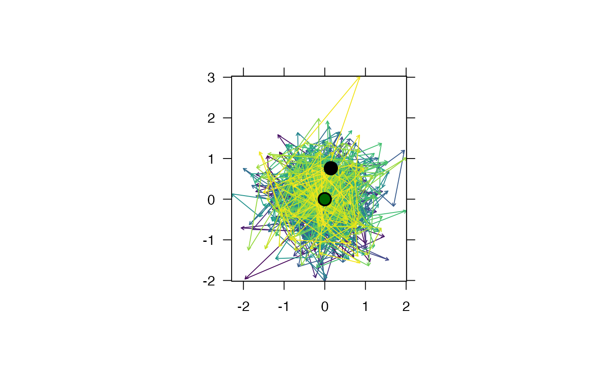
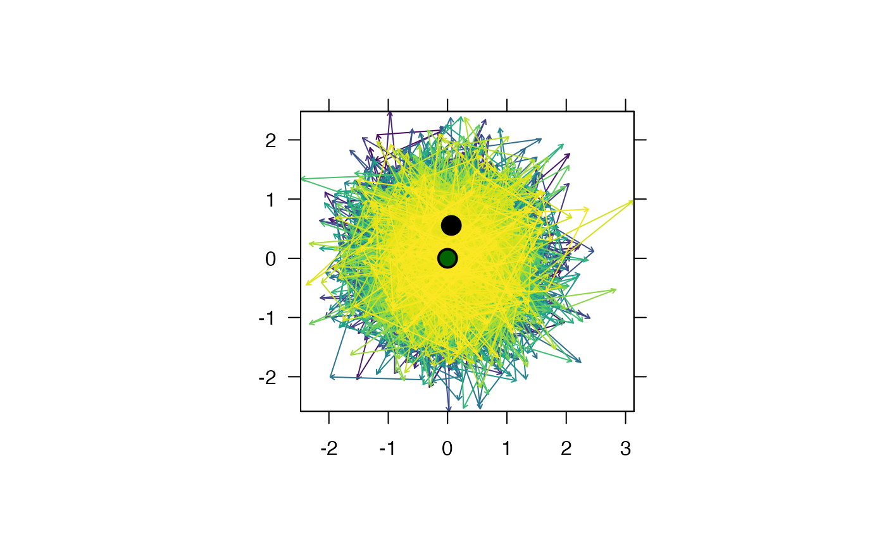
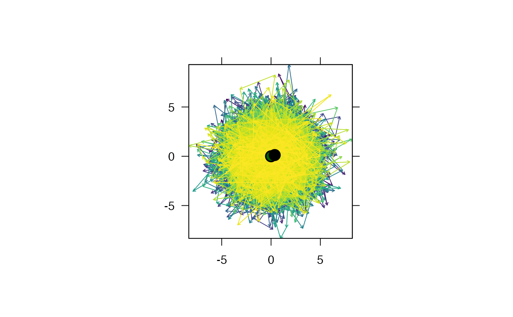
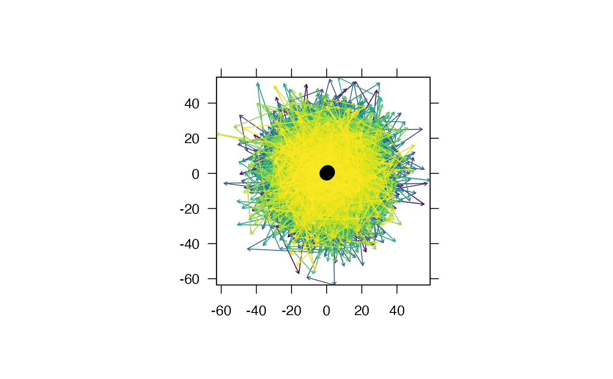
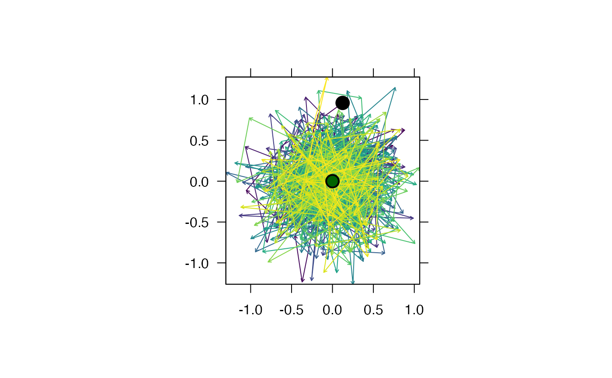

R/sims.R
sim_path_ou_1.RdThis function simulates movement paths under a discrete-time Ornstein-Uhlenbeck process in which the parameters of the movement model are assumed to remain constant through time.
sim_path_ou_1( n = 1000, r_1 = NULL, r_h = matrix(c(0, 0), ncol = 2), k = 1, delta_t = 1, eps = 1, plot = TRUE, add_paths = list(length = 0.04, col = viridis::viridis(n)), add_points = list(pch = 21, cex = 2, lwd = 2, bg = c("darkgreen", "black")), verbose = TRUE, ... )
| n | An integer that defines the number of time steps in the simulation. |
|---|---|
| r_1 | (optional) A matrix with one row and two columns that defines the starting location (x, y). If |
| r_h | A matrix with one row and two columns that defines the `home range' centre location (x, y). |
| k | A number that defines the strength of the `central harmonic force' that pulls an individual back towards its home range centre. |
| delta_t | A number that defines the number of time units between each time step. |
| eps | A number that defines the variance. |
| plot | A logical variable that defines whether or not to plot the simulated path. |
| add_paths, add_points | (optional) Named lists of arguments that are used to customise the appearance of points (the home range and starting location, in that order, shown as filled green and black circles by default) and the path on the map. |
| verbose | A logical variable that defines whether or not to print messages to the console that relay function progress. |
| ... | Additional arguments, passed to |
The function returns an n-row, two-column matrix that defines the simulated location (x, y) at each time step and, if plot = TRUE, a plot of the path.
Ornstein-Uhlenbeck processes are convenient models for animal movement around a `home range' centre. In the model, a parameter (k) `pulls' the location of the individual (\(\vec{r}\)) back towards the centre of its home range (\(\vec{r}^H\)) as it moves away from this centre. This function implements the discretised form of the Ornstein-Uhlenbeck model in which the parameters of the movement model remain constant through time, and in which movement is not constrained by barriers, described by Alós et al. (2016) (see equations (8) and (9) in particular). Under this model, the position \(\vec{r}\) of the animal at time \(n + 1\) is given by:
$$\vec{r}_{n + 1} = \vec{r}^H + e^{-k \Delta t} (\vec{r}_n - \vec{r}^H) + \vec{R}_n,$$
where \(\vec{r}^H\) is the location of the home range centre; \(k\) is the strength of the central harmonic force; \(\Delta t\) is the duration between time steps; and \(\vec{R}_n\) is a bi-dimensional normally distributed random variable with mean zero and standard deviation (\(\sigma\)) given by:
$$\sigma = \sqrt{ \frac{\epsilon (1 - e^{-2 k \Delta t})} {2 k}}.$$
Note that the default plotting parameters for this function require the viridis package for pretty visualisation.
Alós, J. et al. (2016) Bayesian State-Space Modelling of Conventional Acoustic Tracking Provides Accurate Descriptors of Home Range Behavior in a Small-Bodied Coastal Fish Species. Plos One 11, e0154089.
For movement simulations, see sim_path_* for the full list of functions currently implemented in flapper. For example, sim_path_sa simulates a movement path based on step lengths and turning angles. This can support movement within restricted areas. More broadly, sim_array, sim_path_* and sim_detections provide an integrated workflow for simulating acoustic arrays, movement paths in these areas and detections at receivers arising from movement.
Edward Lavender
#### Example (1): Implement simulation with default options path <- sim_path_ou_1()#> flapper::sim_path_ou_1() called (@ 2021-12-02 14:45:59)... #> ... Setting up simulation... #> ... Simulating movement path... #> ... Plotting simulated path... #> prettyGraphics::pretty_map() called (@ 2021-12-02 14:45:59)... #> ... Implementing function checks... #> ... Getting CRS...#>#> ... Getting axis parameters... #> ... Defining pretty axes... #> ... Defining area... #> ... Plotting background...#> ... Adding spatial layer(s)... #> ... Adding pretty axes... #> ... prettyGraphics::pretty_map() call completed (@ 2021-12-02 14:45:59) after ~0 minutes. #> ... flapper::sim_path_ou_1() call completed (@ 2021-12-02 14:45:59) after ~0 minutes.#### Example (2): Change the number of time steps path <- sim_path_ou_1(n = 10000)#> flapper::sim_path_ou_1() called (@ 2021-12-02 14:45:59)... #> ... Setting up simulation... #> ... Simulating movement path... #> ... Plotting simulated path... #> prettyGraphics::pretty_map() called (@ 2021-12-02 14:45:59)... #> ... Implementing function checks... #> ... Getting CRS...#>#> ... Getting axis parameters... #> ... Defining pretty axes... #> ... Defining area... #> ... Plotting background...#> ... Adding spatial layer(s)... #> ... Adding pretty axes... #> ... prettyGraphics::pretty_map() call completed (@ 2021-12-02 14:45:59) after ~0 minutes. #> ... flapper::sim_path_ou_1() call completed (@ 2021-12-02 14:45:59) after ~0 minutes.#### Example (3): Change model parameters # esp parameter path <- sim_path_ou_1(n = 10000, eps = 10)#> flapper::sim_path_ou_1() called (@ 2021-12-02 14:45:59)... #> ... Setting up simulation... #> ... Simulating movement path... #> ... Plotting simulated path... #> prettyGraphics::pretty_map() called (@ 2021-12-02 14:45:59)... #> ... Implementing function checks... #> ... Getting CRS...#>#> ... Getting axis parameters... #> ... Defining pretty axes... #> ... Defining area... #> ... Plotting background...#> ... Adding spatial layer(s)... #> ... Adding pretty axes... #> ... prettyGraphics::pretty_map() call completed (@ 2021-12-02 14:45:59) after ~0 minutes. #> ... flapper::sim_path_ou_1() call completed (@ 2021-12-02 14:45:59) after ~0 minutes.path <- sim_path_ou_1(n = 10000, eps = 500)#> flapper::sim_path_ou_1() called (@ 2021-12-02 14:45:59)... #> ... Setting up simulation... #> ... Simulating movement path... #> ... Plotting simulated path... #> prettyGraphics::pretty_map() called (@ 2021-12-02 14:45:59)... #> ... Implementing function checks... #> ... Getting CRS...#>#> ... Getting axis parameters... #> ... Defining pretty axes... #> ... Defining area... #> ... Plotting background...#> ... Adding spatial layer(s)... #> ... Adding pretty axes... #> ... prettyGraphics::pretty_map() call completed (@ 2021-12-02 14:46:00) after ~0 minutes. #> ... flapper::sim_path_ou_1() call completed (@ 2021-12-02 14:46:00) after ~0 minutes.# central harmonic parameter path <- sim_path_ou_1(n = 1000, eps = 1, k = 1)#> flapper::sim_path_ou_1() called (@ 2021-12-02 14:46:00)... #> ... Setting up simulation... #> ... Simulating movement path... #> ... Plotting simulated path... #> prettyGraphics::pretty_map() called (@ 2021-12-02 14:46:00)... #> ... Implementing function checks... #> ... Getting CRS...#>#> ... Getting axis parameters... #> ... Defining pretty axes... #> ... Defining area... #> ... Plotting background...#> ... Adding spatial layer(s)... #> ... Adding pretty axes... #> ... prettyGraphics::pretty_map() call completed (@ 2021-12-02 14:46:00) after ~0 minutes. #> ... flapper::sim_path_ou_1() call completed (@ 2021-12-02 14:46:00) after ~0 minutes.path <- sim_path_ou_1(n = 1000, eps = 1, k = 3)#> flapper::sim_path_ou_1() called (@ 2021-12-02 14:46:00)... #> ... Setting up simulation... #> ... Simulating movement path... #> ... Plotting simulated path... #> prettyGraphics::pretty_map() called (@ 2021-12-02 14:46:00)... #> ... Implementing function checks... #> ... Getting CRS...#>#> ... Getting axis parameters... #> ... Defining pretty axes... #> ... Defining area... #> ... Plotting background...#> ... Adding spatial layer(s)... #> ... Adding pretty axes... #> ... prettyGraphics::pretty_map() call completed (@ 2021-12-02 14:46:00) after ~0 minutes. #> ... flapper::sim_path_ou_1() call completed (@ 2021-12-02 14:46:00) after ~0 minutes.path <- sim_path_ou_1(n = 1000, eps = 1, k = 500)#> flapper::sim_path_ou_1() called (@ 2021-12-02 14:46:00)... #> ... Setting up simulation... #> ... Simulating movement path... #> ... Plotting simulated path... #> prettyGraphics::pretty_map() called (@ 2021-12-02 14:46:00)... #> ... Implementing function checks... #> ... Getting CRS...#>#> ... Getting axis parameters... #> ... Defining pretty axes... #> ... Defining area... #> ... Plotting background...#> ... Adding spatial layer(s)... #> ... Adding pretty axes... #> ... prettyGraphics::pretty_map() call completed (@ 2021-12-02 14:46:00) after ~0 minutes. #> ... flapper::sim_path_ou_1() call completed (@ 2021-12-02 14:46:00) after ~0 minutes.#### Example (4): Customise the plot via add_paths, add_points and ... n <- 1000 path <- sim_path_ou_1(n = n, add_points = list(pch = c(1, 4), lwd = 3), add_paths = list(col = viridis::magma(n)), pretty_axis_args = list(1:4) )#> flapper::sim_path_ou_1() called (@ 2021-12-02 14:46:00)... #> ... Setting up simulation... #> ... Simulating movement path... #> ... Plotting simulated path... #> prettyGraphics::pretty_map() called (@ 2021-12-02 14:46:00)... #> ... Implementing function checks... #> ... Getting CRS...#>#> ... Getting axis parameters... #> ... Defining pretty axes...#>#> ... Defining area... #> ... Plotting background...#> ... Adding spatial layer(s)... #> ... Adding pretty axes... #> ... prettyGraphics::pretty_map() call completed (@ 2021-12-02 14:46:00) after ~0 minutes. #> ... flapper::sim_path_ou_1() call completed (@ 2021-12-02 14:46:00) after ~0 minutes.